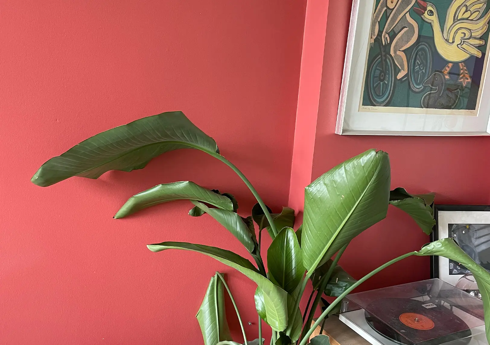
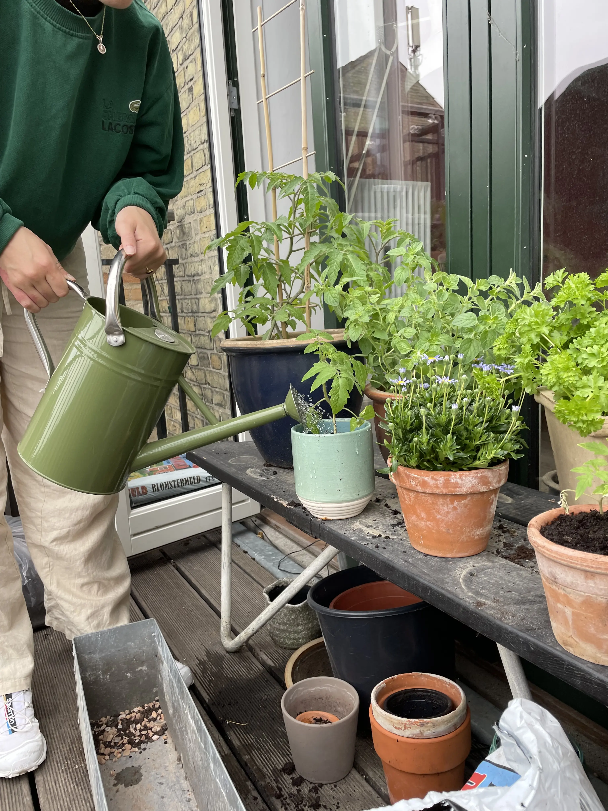
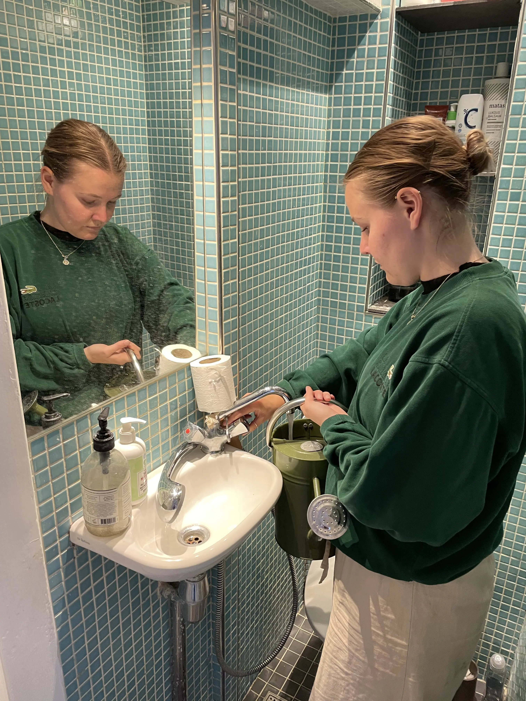
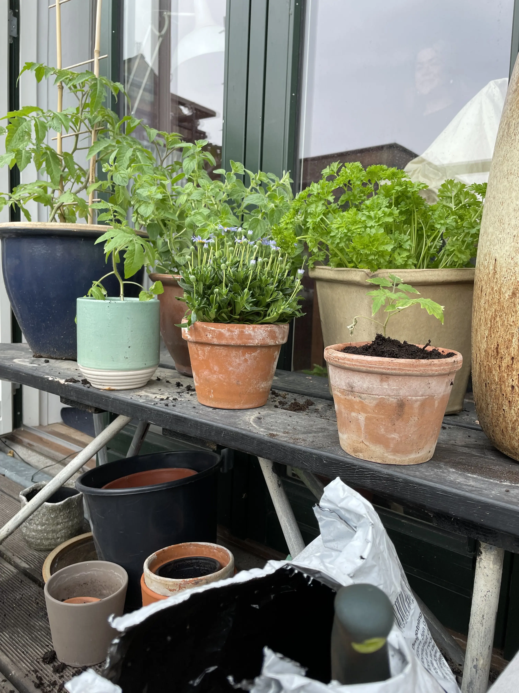

<!DOCTYPE html>
<html lang="en">
  <head>
    <meta charset="UTF-8" />
    <meta http-equiv="X-UA-Compatible" content="IE=edge" />
    <meta name="viewport" content="width=device-width, initial-scale=1.0" />
    <link rel="stylesheet" href="style.css" />
    <title>pilate site</title>
  </head>
  <body>
</html>

<header>
<h1>Byhaver i bylivet</h1>
   <nav>
        <ul>
          <li><a href="wireframe">wireframe</a></li>
        </ul>
      </nav>
</header>

<main>
<div class="baggrund_container">

<div class="tekst_sprite"> 
<h3> - Livet på nørrebro, i en lille ljelighed med en lille byhave på altanen</h3>
</div>
</div>

<div class="grid">
<div class="col">
<h3>Vande planter</h3>

<figcaption>
  <p>En stor del af dagligdagen ligger i at slappe af imens jeg vander blomster!</p>
</figcaption>
</div>
<div class="col">
<h3>Fylder vandkanen</h3>

<figcaption>
   <p> Det er næsten som terapi at gå rundt og vande min planter i min hverdag!</p>
</figcaption>
</div>
<div class="col">
<h3>Vande planter</h3>

<figcaption>
Det er også vigtigt for mig at have projekter fra bunden. Det handler om at bygge et liv op fra bunden af! 
</figcaption>
</div>
</div>
</main>

  <footer>
      <p>©Karoline Thomasen</p>
    </footer>
  </body>